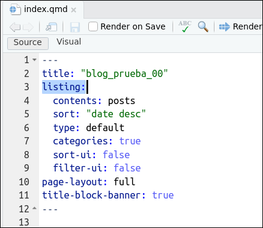

Mi primer blog con Quarto
(Slides para el presentador)
![]()
10/12/23
Contexto
Tutorial preparado para el taller Mi primer blog con Quarto impartido en Córdoba (Spain) durante el I Congreso & XII Jornadas de Usuarios de R, 23-25 de noviembre de 2022.
El taller está pensado para realizar con R. Se utilizará el IDE RStudio y Quarto. Se recomienda tener instaladas versiones recientes de los 3 programas
Este tutorial es sólo una parte del taller. El taller completo está aquí.
Hay 3 formas de seguir el tutorial
La forma recomendada: utilizando Quarto a través de RStudio
Utilizar Quarto desde la Terminal y usar tu editor favorito (VScode …)
Utilizar RStudio Cloud
2. Creación de un blog básico con Quarto
(2ª parte del tutorial)
¿Qué haremos en este tutorial?
Veremos de forma rápida el proceso de creación y la estructura de ficheros de un blog creado con Quarto.
Alojaremos el blog en Quarto Pub.
Será un blog básico pero completamente operativo. Ya tendremos tiempo de mejorarlo, o tunearlo, en las siguientes secciones del taller.
Tarea 1
Tarea 1: Creación de la carpeta que contendrá nuestro blog (3 formas de hacerlo)
A) Crear la carpeta (o Qproject) desde RStudio
En RStudio sigue la siguiente ruta de menús:
File > New Project > New Directory > Quarto BlogAl hacerlo se creará una carpeta, un Qproject, con todo lo necesario para crear un blog.
El nombre que le he puesto a la carpeta/Qproject es
blog_prueba_00
B) Crear la carpeta desde la Terminal
- Has de ejecutar
quarto create-project blog_prueba_00 --type website --template blogen la Terminal
C) Usando un Qproject creado con RStudio Cloud
Tienes que ir aquí. Se abrirá Rstudio con un Qproject llamado
blog_prueba_00.Has de tener cuenta en RStudio Cloud. Haz una copia permanente y trabaja sobre ella
Contenido del Qproject

Los archivos importantes ahora son:
_quarto.yml: especifica la estructura (y apariencia) del blog.about.qmd: una de la páginas del blogindex.qmd: generará la “landing page”
Generación del blog
Tarea 2: Generación del blog
Ir al cuadrante superior-izquierda de RStudio, pinchar en la pestaña
Buildy pinchar enRender Website.De esta forma, se procesarán los archivos del Qproject y se creará el blog.
Podremos verlo en el cuadrante inferior-izquierda de RStudio, concretamente en la pestaña
Viewer.
- Puedes ver aquí, como quedaría el blog una vez alojado en internet.
Extensiones: formas alternativas de generar el blog
También podríamos haber generado el blog usando la Consola o la Terminal desde RStudio.
En ambos casos hay que estar en el Qproject “blog_prueba_00”; es decir, “blog_prueba_00” es el working directory
Desde la Terminal
desde la Consola de R
Contenido del Qproject (tras procesar el blog)

Se han creado 2 subcarpetas:
_sitey_freeze_sitees la carpeta que contiene el blog.
Ver el blog en local
_sitees la carpeta que contiene el blog. Veamos su contenidoLa página principal (o Home) de nuestro blog es el archivo
index.html.El archivo
index.htmlha sido generado por el ficheroindex.qmd.
Tarea 3: Ver el blog
Enseguida publicaremos el blog en Quartopub, pero antes, vamos a verlo en local; para ello solo tienes que pinchar en el archivo
./blog_prueba_00/_site/index.htmlEse fichero es el que contiene la “Landing Page” o “Home” de nuestro blog.
Como ves el blog es muy sencillo, solo tiene 2 páginas: la Home Page (que consiste en un listado de posts) y la página
About.
Contenido de index.qmd
- El archivo
index.qmdgeneraindex.html, la página principal (o Home) de nuestro blog
Extensiones: ver el contenido del archivo index.qmd
Contenido del archivo index.qmd que genera a index.html:

Como vemos, el archivo
index.qmdno tiene contenido, sólo contiene unyamlo encabezamientoEse encabezamiento genera una lista (
listing:) con los contenidos (con los ficheros .qmd) que haya en la carpetaposts.Sí, has imaginado bien, en la carpeta
postses donde estarán los ficheros .qmd que generarán los postsEl resto del yaml son opciones para nuestro blog. Por ejemplo,
sort: "date desc"ordenará el listado de post de más reciente a más antiguo.Lo iremos viendo
Alojando el blog
Tarea 4: Alojar el blog en Quarto Pub
Para publicar nuestro blog en Quartopub sólo hay que:
teclear en la Terminal de RStudio (panel inferior-izquierda) lo siguiente:
Tras ejecutar lo anterior, se te pedirá que autorices en la Terminal.
Después se abrirá el navegador, tendrás que logearte en
Quarto Puby volverás a autorizar. Además te preguntarán el nombre del blog.
Extensiones: el fichero _publish.yml
Si te fijas, tras haberse publicado el blog en “Quarto Pub”, se habrá creado un nuevo fichero en nuestro Qproject: es el fichero _publish.yml. En él solamente están los metadatos necesarios para publicar y actualizar nuestro blog.
Resumen
Resumen
En este tutorial, la segunda parte del taller, hemos visto:
Como crear un Qproject con la estructura de carpetas y archivos necesaria para generar un blog básico
Hemos visto (de forma rápida) el contenido, los archivos, que hay en el Qproject.
El Qproject contiene 3 archivos que serán los importantes, los que trabajaremos en el próximo tutorial, concretamente:
_quarto_yml,index.qmdyabout.qmdHemos aprendido a generar el blog a través de RStudio, simplemente
Build > Render WebsiteHemos visto que el blog realmente se aloja en la carpeta
_sitey que la homepage esindex.htmlLa homepage del blog es un listado de post (lógicamente, es un blog!!)
La homepage (
index.html) es generada por el archivoindex.qmdEl archivo
index.qmdsolo tieneyamlHemos publicado el blog en Quarto Pub
3. Tuneado básico del blog
(3ª parte del tutorial)
¿Qué haremos en este tutorial?
En esta tercera parte del taller vamos a mejorar/tunear un poco nuestro blog. Nos servirá para afianzar nuestro conocimiento de la estructura de ficheros del blog
En este tutorial nº 3, para hacer un tuneado básico del blog, modificaremos 3 archivos, concretamente los archivos:
_quarto.yml,index.qmdyabout.qmd. Iremos archivo por archivoFinalmente modificaremos (un poco) el archivo
styles.cssEn el tutorial nº 6 se profundiza en el tuneado del blog
Archivo _quarto.yml

_quarto.yml
_quarto.ymlTarea 1
Tarea 1: Modificar el contenido de _quarto.yml
- Simplemente sustituye el contenido original del fichero
_quarto.ymlpor el contenido del siguiente chunk:
project:
type: website
website:
title: "Mi blog (aún en pruebas)"
navbar:
logo: "profile.jpg"
right:
- text: "About me"
href: about.qmd
- icon: github
href: https://github.com/<tu-usuario-github>
- icon: twitter
href: https://twitter.com/<tu-usuario twitter>
- icon: envelope
url: "mailto:<tu-mail@uv.es>"
left:
- text: "Docencia"
href: docencia.qmd
format:
html:
theme: minty
css: styles.css
toc: true
highlight-style: a11yTareas 2, 3 y 4
Tarea 2: Crear el archivo docencia.qmd
- Podríamos crear el archivo
docencia.qmdcon cualquier contenido, incluso podría ser un documento sin contenido, PERO, mejor si lo creas con el siguiente contenido:
Tarea 3: Crear el archivo /pdfs/econometria.pdf
Como puedes ver, en el archivo
docencia.qmdse hace referencia al archivo/pdfs/econometria.pdf. Si quieres que el link funcione, tienes que crear dentro del Qproject, la subcarpetapdfs, y dentro de ella el archivoeconometria.pdf.Puede ser cualquier pdf, siempre que se llame
econometria.pdf
Tarea 4: Volver a generar el blog
- Una vez hechas las tarea 2 y 3, puedes crear de nuevo el blog con
Build > Web page.
- Aquí puedes ver como quedaría el blog tras haber modificado
_quarto.yml.
Archivo index.qmd
index.qmd
index.qmd- De momento, solo vamos a hacer cambios en la primera linea: cambiaremos el título.
Tarea 5
Tarea 5: Modificar el contenido de index.qmd
- Simplemente he cambiado la linea 1. Aunque, para mi, casi queda mejor sin ningún título. Para ello tendríamos que comentar (con un #) la primera linea del yaml.
Archivo about.qmd

about.qmd
about.qmd- Si en el
yamlse activa la opciónabout:(linea 3), entonces Quarto tiene disponibles unas plantillas para crear About’s pages. Aquí tienes la documentación oficial sobre estas plantillas. Como puedes ver aquí hay 5 plantillas: jolla, trestles, solana, marquee y broadside.
Tarea 6
Tarea 6: Modificar el contenido de about.qmd
Antes he dicho que solo modificaríamos la linea 5, pero mejor si lo complementamos con algunas acciones más, como el tamaño de la foto y su forma, por eso he añadido 2 lineas tras
template:trestles.Lógicamente estaría bien que sustituyeses la foto: se trata de cambiar
profile.jpg, en la linea 3, por la ruta a tu foto.Abajo tienes el código:
---
title: Yo mismo
image: profile.jpg
about:
template: trestles #- {jolla, solana, ...}
image-width: 10em #- https://cybmeta.com/em-y-rem
image-shape: round #- rectangle, round, rounded
links:
- icon: twitter
text: Twitter
href: https://twitter.com
- icon: linkedin
text: LinkedIn
href: https://linkedin.com
- icon: github
text: Github
href: https://github.com
---Archivo styles.css
- Puedes cambiar la apariencia estética del blog usando los
themespredefinidos en Quarto o puedes usar el archivostyles.css1
Resumen
Resumen
En esta tercera parte del taller hemos aprendido a mejorar/tunear un poco nuestro blog.
Hemos modificado 3 archivos:
_quarto.yml: hemos modificado el título del blog y la estructura de la barra de navegación; concretamente hemos añadido una página nueva.index.qmd: construye la Home Page de nuestra web. La opciónlisting:hace que nuestra web es en realidad un blog.about.qmd: hemos utilizado las plantillas de Quarto para configurar nuestra About page.
Finalmente hemos modificado (mínimamente) el archivo
styles.css.
4. Workflow: ¿cómo crear un post?
(4ª parte del tutorial)
¿Qué haremos en este tutorial?
Ver como podemos iniciar un nuevo post
Aprender a utilizar algunos truquillos de Quarto
¿Donde están los posts del blog?
Los ficheros
.qmdque generan los posts están en la carpetapostsde nuestro Qproject que genera el blog.Cada post está en una carpeta diferente. Veámoslo:

Contenido de cada subcarpeta de ./posts/
Veamos el contenido de una de las carpetas que generan los posts, por ejemplo la carpeta /welcome/:

welcome que genera el post titulado “Welcome to my blog”
index.qmd”Creando un nuevo post
Tarea 1: Creando un nuevo post
Crea una nueva subcarpeta en
./posts/Ponle nombre, por ejemplo: “my-primer-post”
Copia en la carpeta que hemos creado el contenido de la carpeta de uno de los 2 posts. Por ejemplo copia los 2 archivos que hay en
./posts/welcome/y pégalos en./posts/my-primer-post/; es decir, pegamos el archivoindex.qmdytumbnail.jpgen nuestra nueva carpeta.Vuelve a regenerar el blog:
Build > Render Websitey verás que ahora nuestro blog ya tiene tres posts.
Tarea 2: Modificando el tercer post
Modifica el contenido de
/my-primer-post/index.qmd. Por ejemplo, puedes dejarlo así:Sustituye
thumbnail.jpgpor otro archivoVuelve a regenerar el blog:
Build > Render Website
Resumen
Resumen
En esta cuarta parte del taller hemos visto como podemos generar/escribir nuevos posts para nuestro blog: solo hay replicar una de las carpetas de anteriores posts y cambiarle el nombre.
En el siguiente tutorial veremos en profundidad las posibilidades que nos ofrece Quarto para escribir nuestros posts.
5. Escribiendo posts: practicando con Quarto
(5ª parte del tutorial)
¿Qué haremos en este tutorial?
Aprender a escribir nuestro posts con Quarto: con ficheros
.qmdEn concreto veremos: yaml, texto, chunks
Aprender a utilizar algunos truquillos de Quarto
Advertencia
Voy a suponer que los asistentes al taller, y posible lectores, de estos tutoriales conocen Rmarkdown y han escrito algún documento .Rmd. En ese caso, el paso de .Rmd a .qmd es sencillo.
En cualquier caso, aquí tienes unas FAQ’s para usuarios de .Rmd que se preguntan si pasarse a Quarto, y aquí unas slides sobre las diferencias entre .qmd y .Rmd.
Aquellos que no sepan qué es Rmarkdown pueden empezar por aquí o aquí.